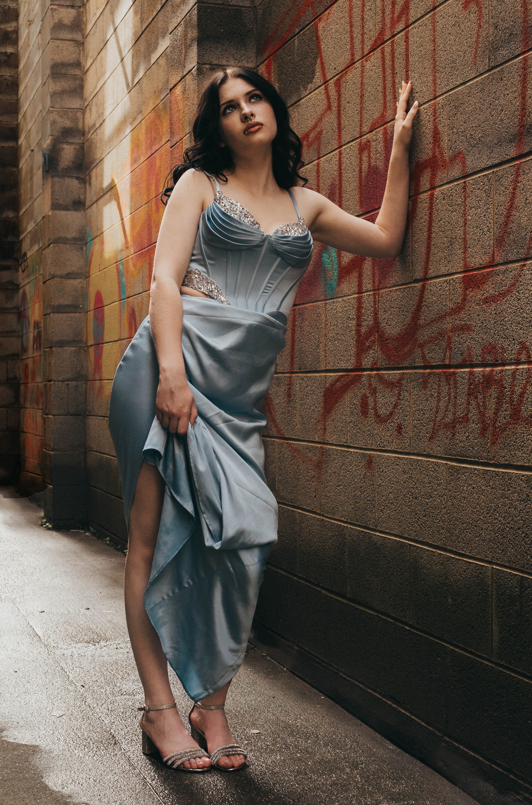

Portrait photography is more than just capturing a face—it’s about revealing a story.
Whether it’s a quiet glance, a joyful laugh, or the power of simply being seen, our lens seeks the genuine,
the graceful, and the uniquely you. Rooted in creativity and guided by emotion, every session is a collaboration—
an intimate experience designed to honor who you are and the life you’re living.
Step into a space where beauty is celebrated, stories are told, and memories are made timeless.

123 Main St.
Fayetteville, NC 28303